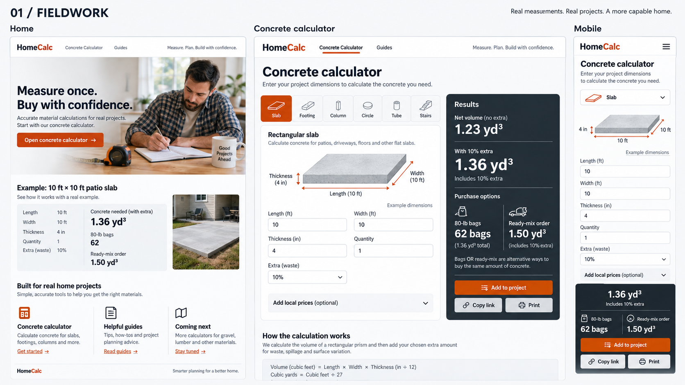
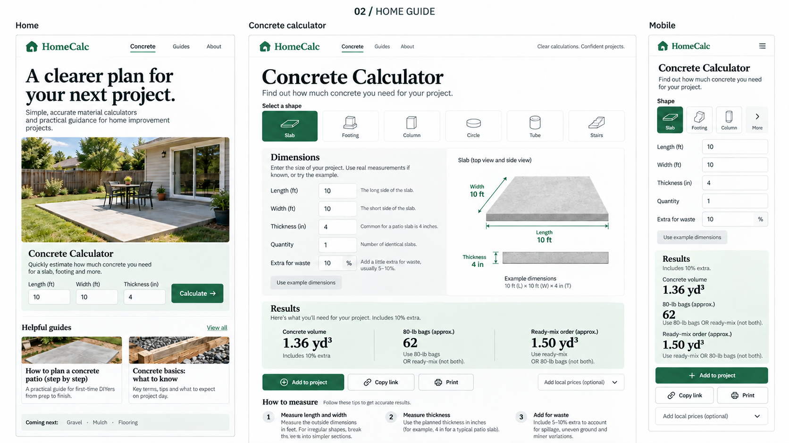
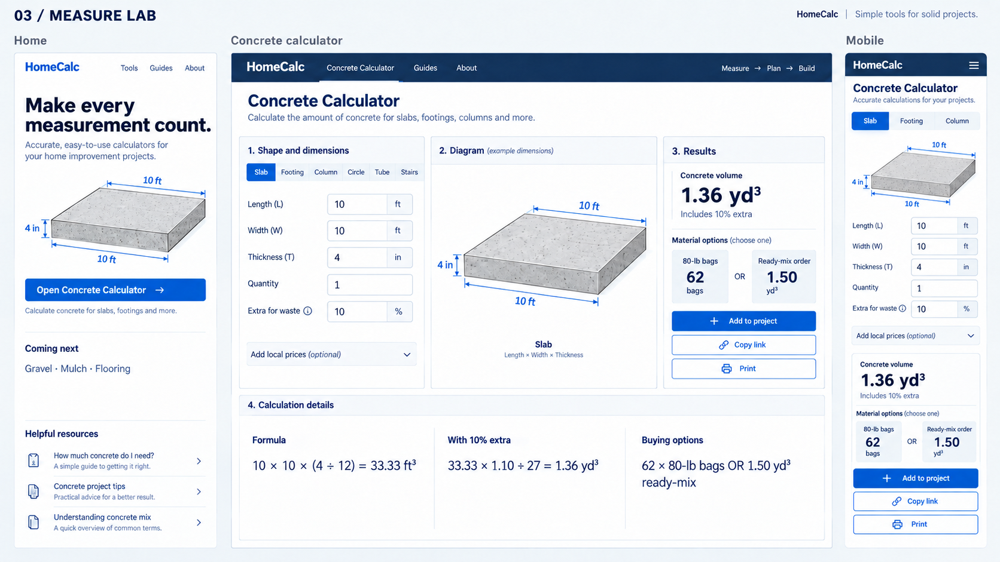
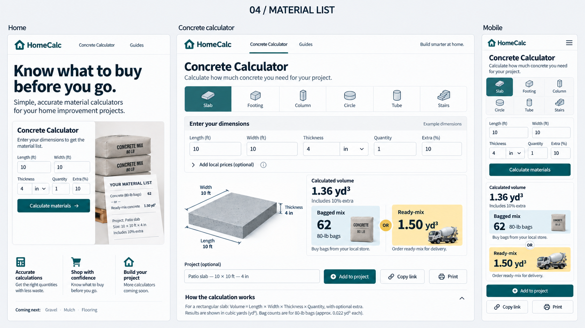
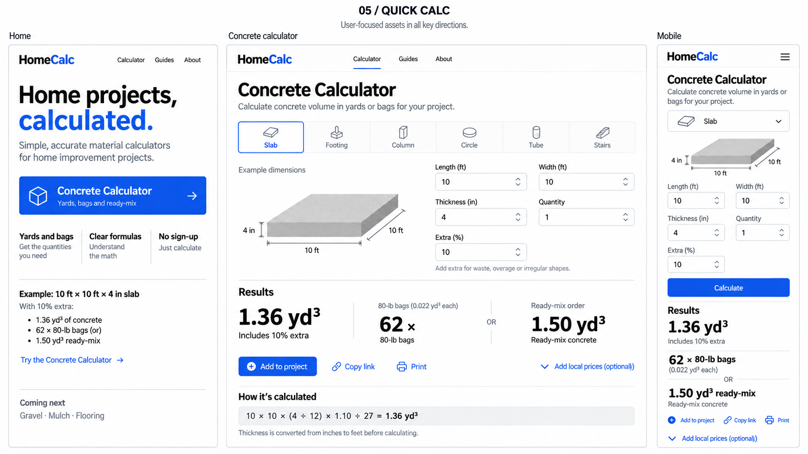

HomeCalc · 视觉方向评审 · 2026-09-26从填尺寸，到知道买多少。
五套方案，每套包含首页、混凝土计算器桌面页和手机页。点击图片可查看原图。品牌与网站文案保留英文，说明采用中文。
推荐：①做整体视觉 + ④做采购结果组织 + ②做测量提示。依据现有英文家装计算器项目提出，属于设计判断，尚未经过用户测试。图片为内置 image_gen 生成的概念稿，新增的 Guides、首页快算等不代表当前已经实现。未改动业务页面。
阅读完整设计说明与最佳实践 ·
查看生成与修订提示词
① 专业工具台
首选。施工橙 + 炭黑结果栏，输入与答案分工明确。
最适合当前项目，延续已有视觉基础。

同一算例：10 × 10 ft，厚 4 in，损耗 10%；1.36 yd³，62 袋 80-lb，或预拌订购 1.50 yd³。② 亲和家装指南
森林绿 + 庭院摄影 + 编辑式标题，帮助第一次做 DIY 的用户。
适合长期发展教程内容；需要控制图片与指南维护成本。

同一算例：10 × 10 ft，厚 4 in，损耗 10%；1.36 yd³，62 袋 80-lb，或预拌订购 1.50 yd³。③ 工程测量工作台
工程蓝 + 三栏布局，尺寸关系、输入与结果同步对照。
适合复杂形状；手机和平板必须重排，不能照搬三栏。

同一算例：10 × 10 ft，厚 4 in，损耗 10%；1.36 yd³，62 袋 80-lb，或预拌订购 1.50 yd³。④ 材料采购清单
深青 + 采购提示黄，让袋装与预拌两种采购方案一眼可比。
最适合借鉴到结果区；两种采购方案是替代关系。

同一算例：10 × 10 ft，厚 4 in，损耗 10%；1.36 yd³，62 袋 80-lb，或预拌订购 1.50 yd³。⑤ 极简快速计算
黑白 + 钴蓝，减少容器与装饰，让输入和答案更接近。
适合轻量工具站；品牌辨识度相对弱。

同一算例：10 × 10 ft，厚 4 in，损耗 10%；1.36 yd³，62 袋 80-lb，或预拌订购 1.50 yd³。